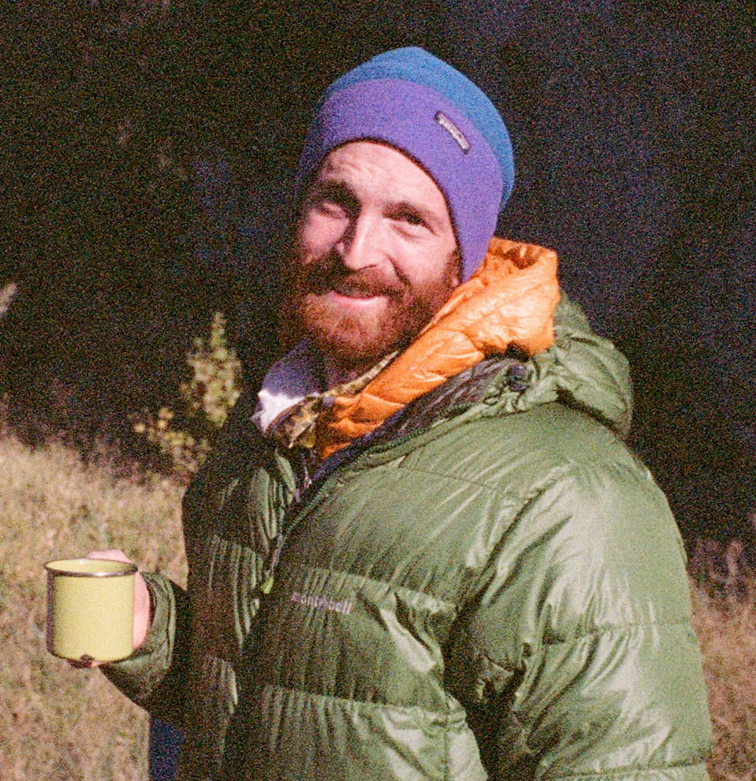
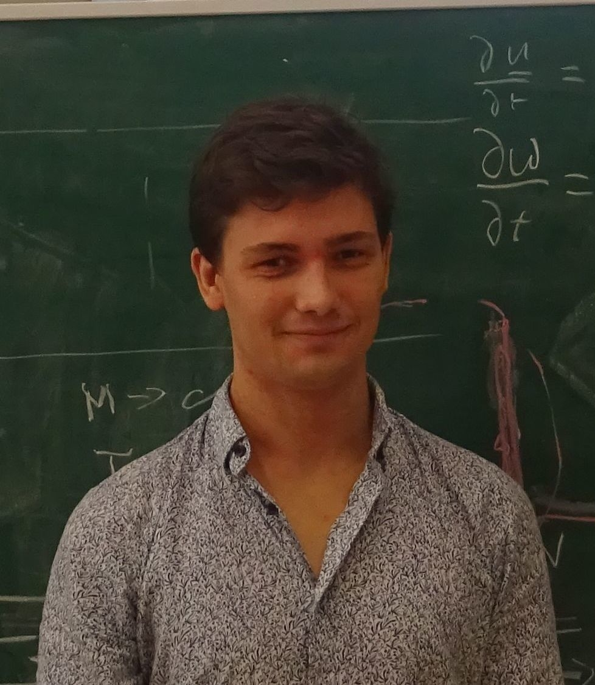
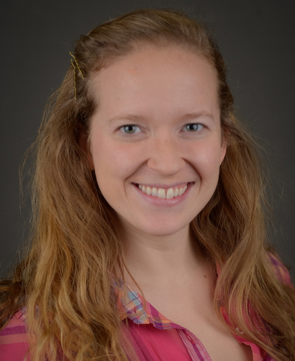
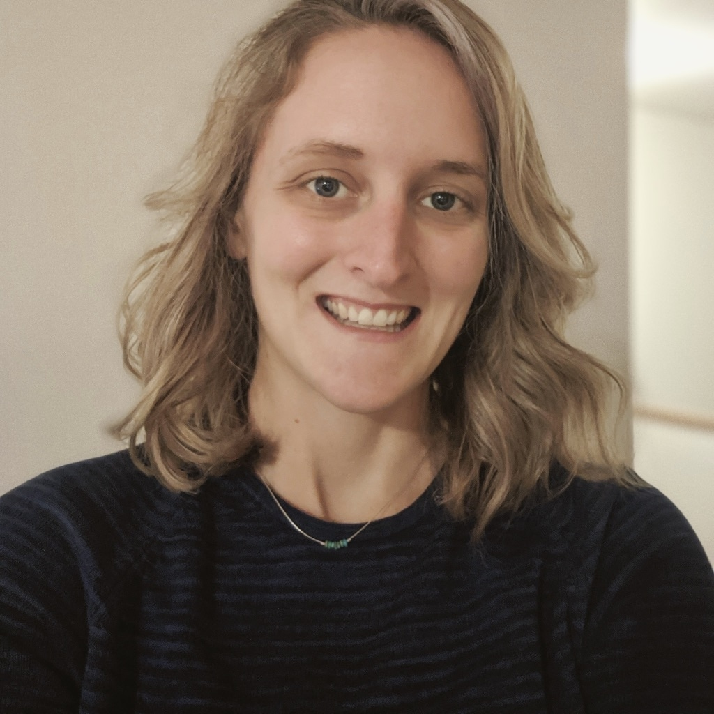

Group Members¶
Principal Investigator¶
Ryan Abernathey¶


Ryan is the principal investigator for the Ocean Transport Group. Besides all the science stuff described here, Ryan enjoys spending time with his young son, playing the fiddle, and spending time in the mountains.
Research Scientists¶
Julius Busecke¶
{kind=link}


Julius is an assistant research scientist in the Climate Data Science Lab. He is an oceanographer interested in ocean physics and biogeochemistry using a variety of tools and datasets. In his freetime he enjoys photography, biking and climbing.
Spencer Jones¶


Spencer is a postdoc in the Ocean Transport Group. He studies the global ocean circulation and large-scale effects of ocean mixing. Spencer also enjoys reading and going to the theater.
Software Engineers¶
Charles Blackmon-Luca¶
{kind=link}


Charles is a software engineer in the Ocean Transport Group. His work is primarily focused on Pangeo, an open source community platform for big data geoscience. His interests include cloud-based data science, biking, and gaming.
Tom Nicholas¶
{kind=link}



Tom is a research software engineer in the Climate Data Science Lab. He is keen to improve the software tools available to all scientists. His interests include climate activism, playing his guitar, and gymnastics.
Postdocs¶
Paige Martin¶
{kind=link}



Paige is a postdoc in the Climate Data Science Lab and is currently based at the Australian National University. She likes to use Python and open-source tools to study coupled ocean-atmosphere dynamics. Paige also enjoys doing musical theater, aerial arts, and handstands.
Hillary Scannell¶
{kind=link}



Hillary is a postdoc in the Climate Data Science Lab. She is an expert on marine heatwaves and uses data science to better understand the complex spatiotemporal variability of geophysical fluids. Hillary is an outdoor enthusiast originally from Maine and is passionate about land conservation.
Grad Students¶
Shanice Bailey¶


Shanice is a graduate student in the Ocean Transport Group. She currently studies bottom water formation and the internal dynamics of the Weddell Gyre. Shanice also enjoys boxing, hiking, and watching documentaries.
Alumni¶
| Name | Position Here | Position Now |
|---|---|---|
| Anirban Sinha | Ph.D. Student, 2014-2019 | Postdoc, Caltech |
| Takaya Uchida | Ph.D. Student, 2014-2019 | Postdoc, Université Grenoble Alpes |
| Tongya Liu | Visiting Student, 2018-2019 | Ph.D. student, Zhejiang University |
| Sjoerd Groeskamp | Postdoc, 2014-2016 | Postdoc, University of New South Wales |